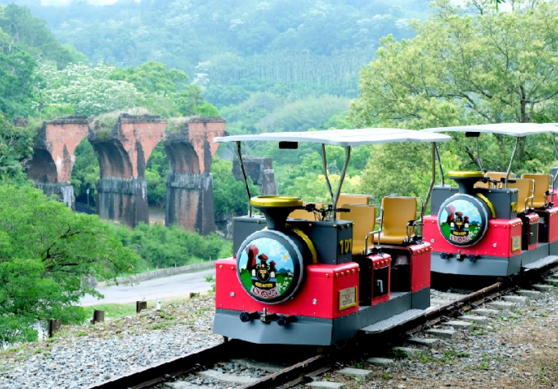
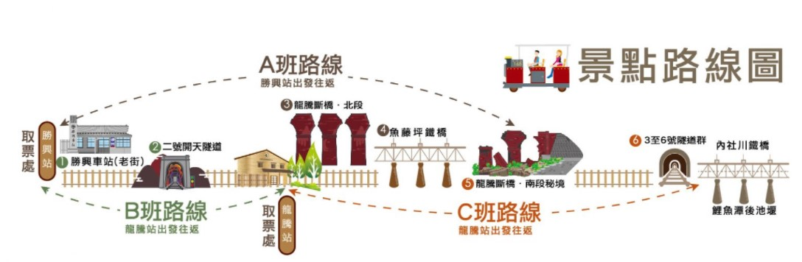
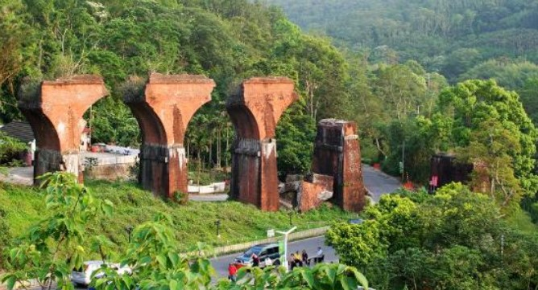
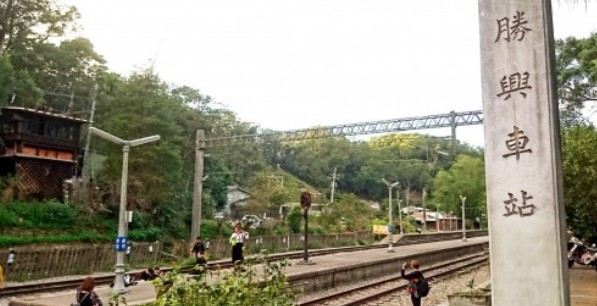
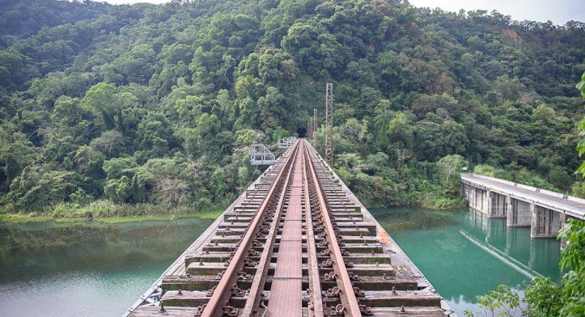

苗栗舊山線鐵道之旅
歷史簡介 車輛介紹 路線圖 相關影片 地理位址 引用來源
歷史簡介
舊山線於1908年建造完成，在架橋技術未成熟的年代，前人創造出「最大坡度、最大彎道、最長花樑鋼橋、最長隧道群」的偉大經典之作。從苗栗縣三義一路蜿蜒至臺中市后里區，沿線經過兩個車站－勝興與泰安舊站、三座鐵橋－龍騰斷橋、鯉魚潭橋、大安溪橋與八個隧道，沿線景觀多變。
車輛介紹

安全設計5大系統
- CHC車輛安全檢測認證。
- 行駛速度控制-電子安全定速系統、防自滑設計。
- RB行駛安全使用說明。
- 安全警語提示/車後警示反光片-緊急通訊救援系統。
- 安前後避震防撞桿系統。
路線圖

- A路線：
勝興站~南斷橋秘境(經魚藤坪鐵橋)
總時程70-80分鐘(含解說時間，導覽自由參加)
沿途經過：勝興車站、2號隧道(燈光投影)、魚藤坪鐵橋、遠眺龍騰斷橋北段、南斷橋秘境。
- B路線：
龍騰站~勝興站(不經過魚藤坪鐵橋)
總時程70-80分鐘(含解說時間，導覽自由參加)
沿途經過：2號隧道(燈光投影)、勝興車站(停留約30分鐘含導覽解說，亦可逛逛勝興老街。
- C路線：
龍騰站~ 6號隧道(經魚藤坪鐵橋)
總時程70-80分鐘(含解說時間，導覽自由參加)
沿途經過：魚藤坪鐵橋、遠眺龍騰斷橋北段、3~6號隧道、遠眺鯉魚潭水庫後池堰、內社川鐵橋。
  
相關影片
地理位置
引用來源
https://www.oml-railbike.com/_pages/info/index.php
https://www.youtube.com/watch?v=SOE7jbyAg0A
©2022